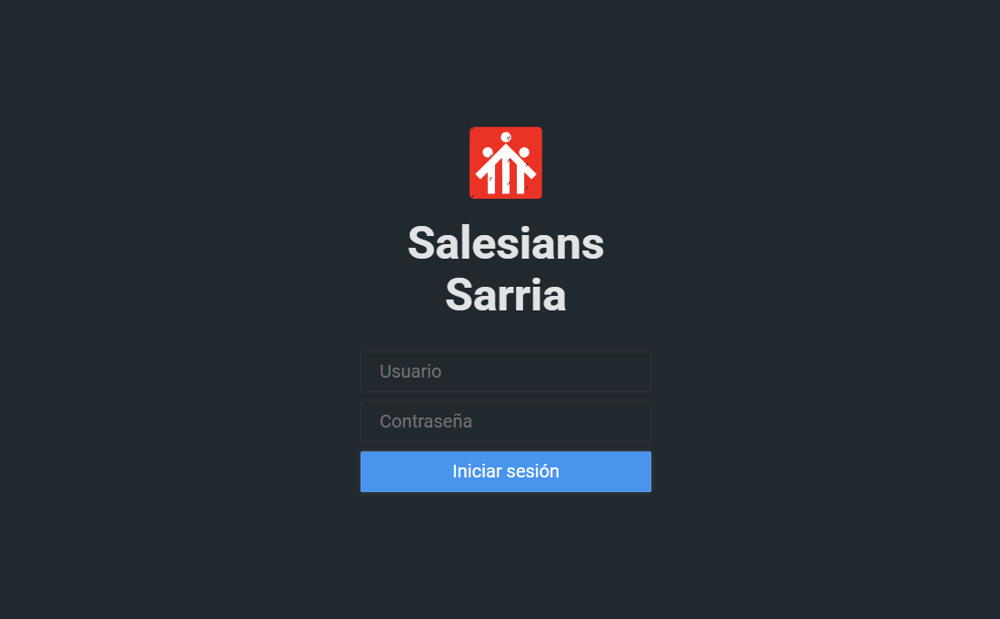
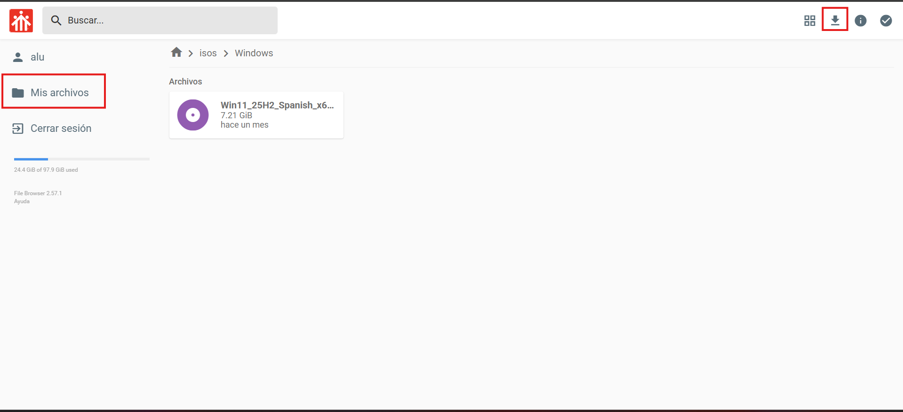
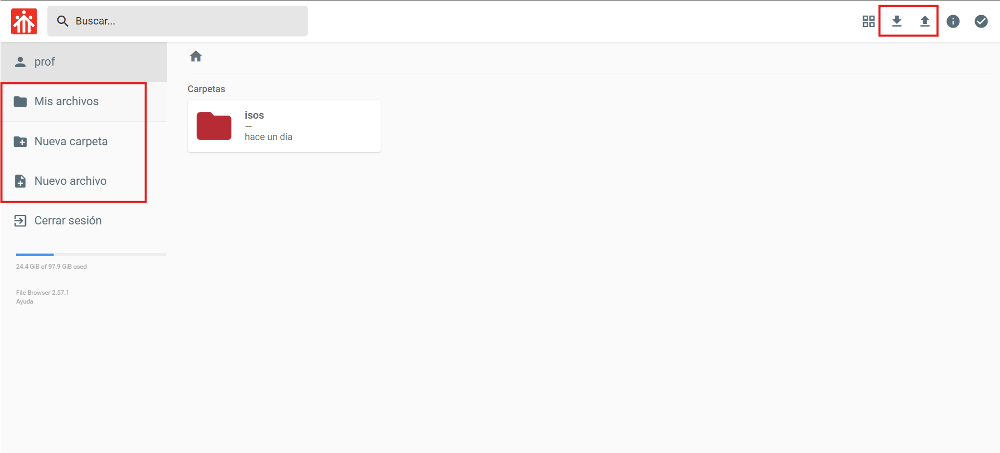

Proyecto individual — Salesians Sarrià
En el entorno de prácticas de sistemas, la descarga simultánea de imágenes ISO (como Ubuntu 24.04) por parte de múltiples alumnos provocaba la saturación de la red WAN del centro. Esto derivaba en descargas lentas, pérdida de tiempo en clase y una dependencia constante de la conexión a internet para recursos de uso frecuente.
Para resolver este problema, diseñé e implementé un servidor local que centraliza el almacenamiento y distribución de imágenes ISO dentro de la red interna.
La solución se basa en Docker, File Browser y un sistema de almacenamiento en RAID 5 (3 discos de 1TB) para garantizar disponibilidad y tolerancia a fallos.
El sistema ofrece una interfaz web accesible desde el navegador y un modelo de acceso basado en roles:

Interfaz de autenticación adaptada con branding institucional.

Acceso restringido a la descarga de archivos, evitando modificaciones en el repositorio.

Permisos completos para la gestión de archivos: subida, edición, eliminación y organización.
La implementación del sistema permitió eliminar la saturación de la red WAN y mejorar significativamente la velocidad de descarga mediante el uso de la red local. Además, se logró centralizar los recursos utilizados en las prácticas, facilitando su acceso y mantenimiento.